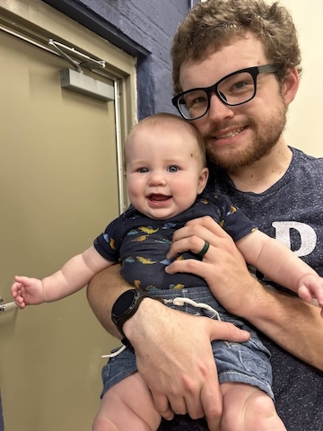

Introduction
-
Personal Background: I was born in Winston-Salem, NC and I grew up in Salisbury, NC, now I live in Kannapolis, NC. Some of my hobbies include video games, and guitar when I am really in the mood for it, which is rare these days. I also enjoy movies and comic books!
-
Academic Background: I graduated from East Rowan High School in 2017, I’ve gone through various college programs trying to decide what degree I wanted and I finally landed on Full Stack Programming.
-
Background in this subject: I have been programming for a little over 2 years now, all of my knowledge prior to starting at CPCC has been self-taught through various projects I decided to take on. I have professionally designed, developed and deployed one website.
-
Primary Computer Platform: M2 MacBook Air
-
Courses that I am Taking and Why
WEB115 Web Markup and Scripting - I needed this class for my degree, but I also wanted a structured class to help me learn some more skills I may not know.
CTI130 OS and Device Foundations - This class was also required for my degree, but I love the opportunity to dive into the inner workings of computers.
-
Funny/Interesting item about yourself: I like to make movie prop replicas through 3D printing.